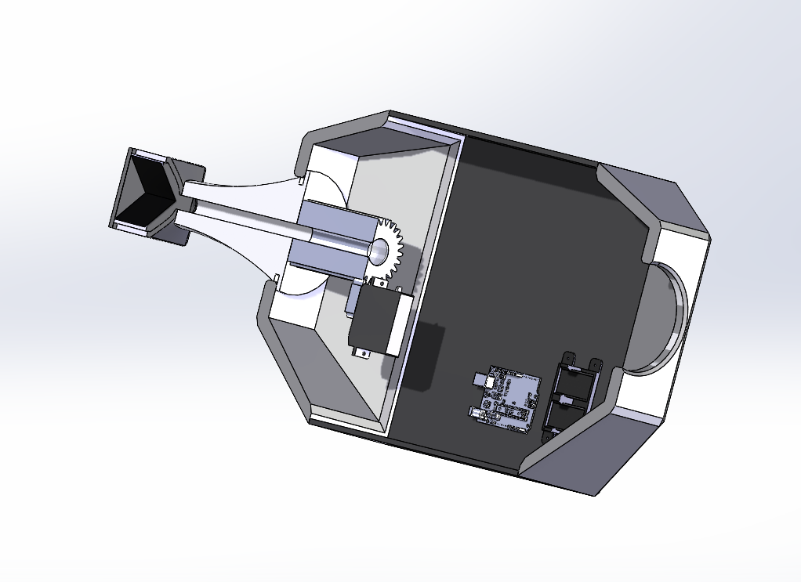

Payload structure · CAD · Testing
Crazy 8s Balloon Payload
Payload housing and structural design · CU Boulder
For this freshman balloon-payload project, I designed the housing and overall payload structure and contributed structural hand calculations and testing.

Payload packaging
The team mission called for a balloon payload with an extendable boom arm and imaging equipment. I focused on the housing and overall structure that packaged and supported the payload. The CAD also shows team-developed equipment to explain the packaging context.
Structural work and testing
My contributions included structural hand calculations and testing. The PDR documents planned whip, drop, kick, and cold-environment tests. Those slides record the test plan; they do not by themselves establish that each test passed or that the mission flew successfully.
Team contribution
My ownership was the housing and payload structure. Electronics, sensing, and other mission subsystems were team contributions. This project provides context for the progression toward my later mechanisms, structural-analysis, and flight-hardware work.